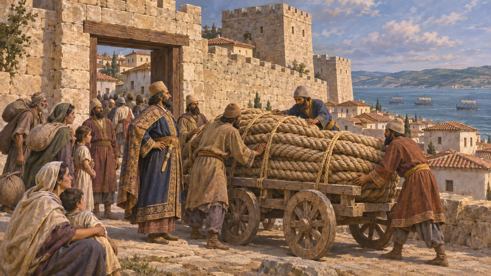
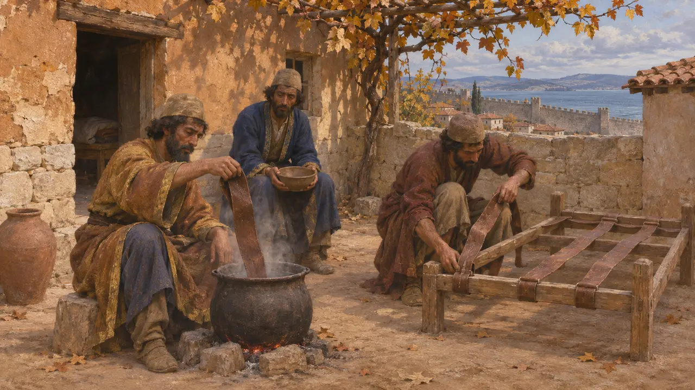
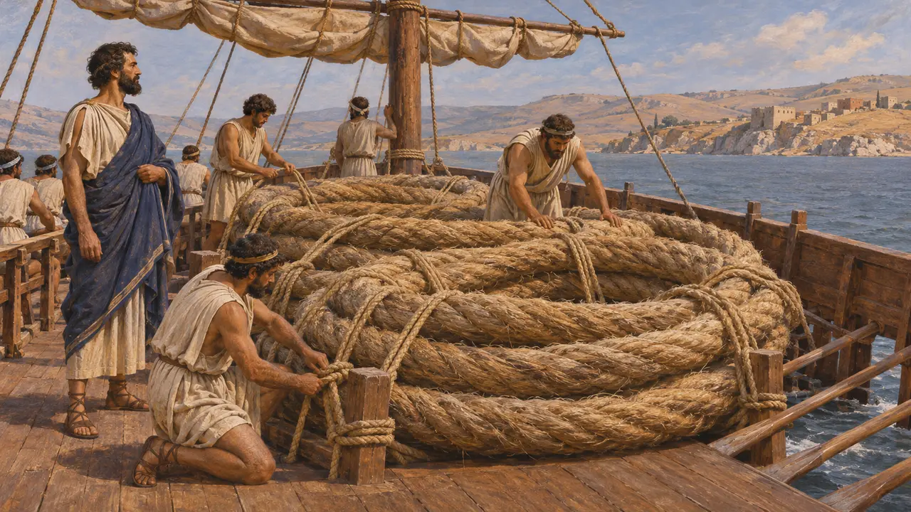
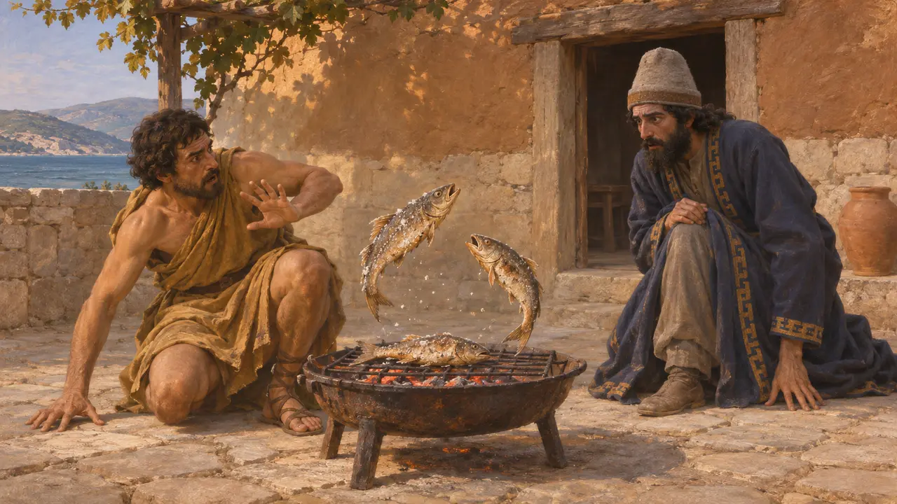
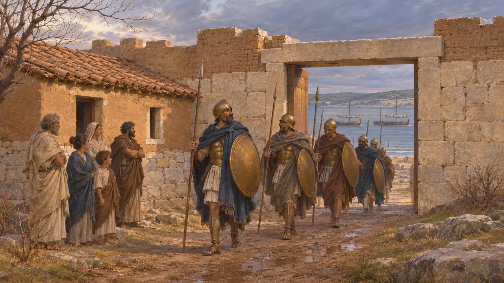

Дом в Сесте
Дом в Сесте на Геллеспонте, осаждённом афинянами, 479–478 гг. до н. э.
Сест был укреплённым городом на европейском берегу Геллеспонта, напротив Абидоса по ту сторону пролива. После победы греков при Микале в 479 году до н. э. туда бежали персы из окрестных земель, и афинский флот осаждал их, пока голод не вынудил их покинуть город. Этой осадой Геродот завершает свой рассказ о войне, и многие историки видят в ней момент, когда греки перешли от защиты родной земли к наступлению на персидские позиции.
В игре: Дом в Сесте стоит на карте уровня как историческое сооружение, которое игрок не может построить. Геродот не называет какого-либо определённого дома, так что это обычное жилище осаждённого города.

Убежище у пролива
Античное свидетельствоГеродот рассказывает, что после Микале спартанский царь Леотихид увёл пелопоннесские корабли домой, а афиняне во главе с Ксантиппом остались осаждать Сест. Персы из окрестных городов собрались там, потому что это была сильнейшая крепость в округе. Перс по имени Эобаз прибыл туда из Кардии, доставив канаты с мостов Ксеркса через Геллеспонт. Правителем города был Артаикт, перс, назначенный Ксерксом.
Herodotus 9.114-116

Голод в стенах города
Античное свидетельствоОсада затянулась до осени. Геродот рассказывает, что афинские воины роптали, что их держат вдали от дома, но полководцы отказывались уходить, пока город не падёт или Афины не отзовут их. Внутри кончилось продовольствие, и защитники варили и ели кожаные ремни со своих лож. Когда не осталось и этого, Артаикт, Ойобаз и персы ночью ускользнули с тыльной стороны стены, где осаждающих было меньше всего, а горожане открыли ворота.
Herodotus 9.117-118

Судьба персидских военачальников
Античное свидетельствоЭобаз бежал во Фракию, где, по словам Геродота, фракийцы-апсинфии схватили его и принесли в жертву своему богу Плейстору. Артаикт был захвачен близ Эгоспотамов. Геродот обвиняет его в разграблении святилища героя Протесилая в Элеунте и сообщает, что афиняне по приказу Ксантиппа пригвоздили его к доске, а его сына побили камнями у него на глазах. Затем афиняне отплыли домой, увозя канаты моста в дар своим святилищам.
Herodotus 9.116, 9.119-121

Подпрыгивающая рыба
Позднейшая легендаГеродот рассказывает, что стражник жарил солёную рыбу, как вдруг рыба начала подпрыгивать и трепетать, словно только что пойманная. Артаикт истолковал это как знамение от Протесилая: герой, хоть и мёртв, властен покарать того, кто его ограбил. Этот рассказ построен как нравоучительная притча о святотатстве и возмездии — теме, которая проходит через заключительные главы «Истории».
Herodotus 9.120

Когда пал и что это значило
СпорныйГеродот относит падение Сеста ко времени до возвращения флота на зимовку, тогда как Фукидид пишет, что афиняне со своими ионийскими и геллеспонтскими союзниками зимовали там и взяли город после осады. Поэтому историки спорят, пал ли он в конце 479 г. до н. э. или в начале 478 г. до н. э. Обсуждается и то, насколько сознательно Геродот выбрал этот эпизод для завершения, поскольку он намекает на последовавшую затем Афинскую державу.
Thucydides 1.89; M. Flower and J. Marincola, Herodotus: Histories Book IX, 2002
Источники
- Herodotus 9.114-122
- Thucydides 1.89
- M. Flower and J. Marincola, Herodotus: Histories Book IX, 2002
- P. Briant, From Cyrus to Alexander, 2002